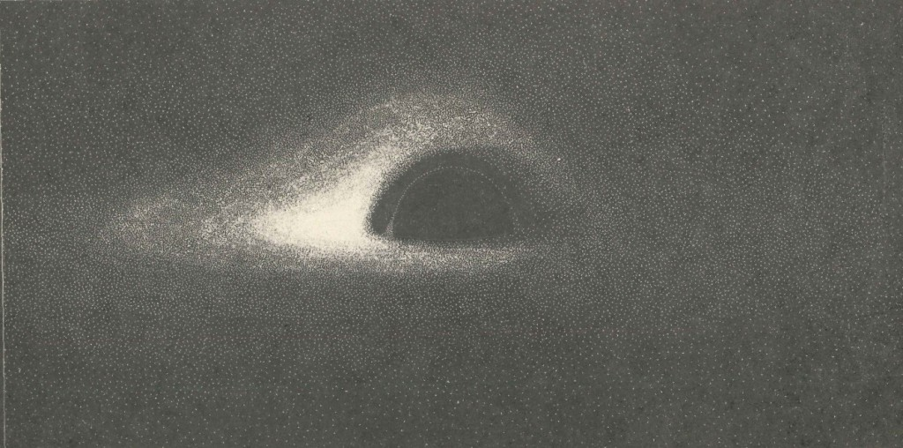

A tribute to Jean-Pierre Luminet, 1979
After Luminet, Astronomy & Astrophysics 75, 228 (1979)
Computed in 1978, drawn by hand in ink, published in 1979. This page rebuilds Luminet's image from his equations.
developing the plate…
The story
In 1978 nobody had seen a black hole, and nobody expected to. Jean-Pierre Luminet, a young astrophysicist at the Paris Observatory in Meudon, decided to compute the view instead. General relativity says that light from a glowing disk of infalling gas is bent around the hole, so the disk should appear folded over itself: you see its top and its underside at once, with a ghost of the far side wrapped around the central shadow.
Luminet traced the light on an IBM 7040, a transistor-era machine programmed with punch cards. There was no software to draw the result, so he plotted it himself: black India ink on white paper, dot by dot, denser where the disk shone brighter. A photographic negative turned his ink into light. The blazing, lopsided ring he revealed anticipated by forty years what the Event Horizon Telescope photographed around the M87 galaxy's black hole in 2019. His paper had even named M87 as a likely place to look.

The geometry
Before the photograph, Luminet drew the geometry: rings of constant distance from the hole, as a far-away observer would see them. Each solid curve is the direct image of one ring; each dashed curve is its ghost, folded around the shadow. These recreate Figs. 5 and 6 of the paper.
The geometry, continued
The paper shows two viewpoints. Here is every viewpoint. From high above, the rings are almost circles; approach the plane and they fold into the shape of the photograph. Each position of the slider re-solves the light-bending equations for about three thousand rays.
The instrument
Luminet's made his ink drawing by hand, then the negative made it famous. Both are below, along with a smooth exposure of the same data. Lower exposure values lift the faint outskirts of the disk into view. (I experimented with a stippled version, which really didn't work.)
How to read the image
The disk is flat, like Saturn's rings, and we view it from almost edge-on. Gravity does the rest.
That is the far side of the disk, behind the hole. Its light is bent over the shadow on the way to us, so it appears hoisted above the plane.
Gas orbits at nearly half the speed of light. Where it races toward us its light is beamed and blueshifted; where it recedes, dimmed. The asymmetry is the disk's rotation made visible.
A secondary image: light from the disk's underside that loops around the hole before escaping. Luminet called it the ghost image.
No stable orbits exist within three Schwarzschild radii, so the disk has an inner edge where its glow dies to zero. The gap between edge and shadow is real emptiness.
The data
The photograph squeezes this map into grain. Each curve joins points of equal observed brightness, in units of the disk's own maximum emission. Watch the values climb past 1.0 on the left, where beaming makes the disk outshine its own source, and every curve cut dead at the dashed inner edge, where the flux falls to zero.
waiting for the plate…
waiting for the plate…
The paper: J.-P. Luminet, “Image of a spherical black hole with thin accretion disk,” Astronomy & Astrophysics 75, 228 (1979). His own account of the hand-plotting, forty years on: “An illustrated history of black hole imaging” (2019). Prior recreations that informed this one: bgmeulem's Python package and mjbo's Observable notebook. The observation the paper anticipated: the Event Horizon Telescope image of M87* (2019).
Fidelity. This page solves the paper's geodesic equations (Eqs. 3 to 13) with elliptic integrals and reproduces its published anchors: the photon ring at b = 3√3 M; the ray of Fig. 4 from r = 9.8 M arriving at b = 1.70 M; the disk flux peaking at r = 9.55 M with the paper's stated maximum. Two scholarly footnotes. First, the flux formula as scanned is easy to misread: deriving Eq. 15 from Page & Thorne gives a √3/2 coefficient on the logarithm, which reproduces the paper's own numbers. Second, the paper quotes 2.62 for the brightest point of Fig. 10; that is the value on the ring of maximum intrinsic flux, where his method evaluated it. The exact field peaks at 2.81 slightly inside it. Both values are reproduced here.
There are no image files on this page. Every figure is computed from the equations when the page loads: curve figures with
Observable Plot through the editorial-graphics EGPlot theme, the plates on a canvas. The plotter stipple follows Mike Bostock's weighted Voronoi stippling of Secord's algorithm. The ghost ring follows Luminet's own estimate: the visible secondary image reduced to a thin line near b = 5.25 M.